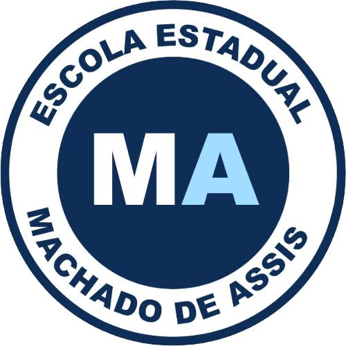

Turma 2°03
O projeto Arte em Movimento foi uma grande aprendizagem, onde tivemos que aprender a trabalhar em grupo, ter paciência e muita força de vontade, dando o melhor de si, trazendo um bom resultado ao final do projeto. O trabalho foi dividido para grupos da turma onde cada um se dedicou e trabalhou da melhor maneira, através de conversar, trocas de ideias e ajuda um com o outro, acabamos por fim entregando um bol projeto.
Adaptação e continuação do conto Pai contra Mãe
Sinopse: Está continuação do conto " Pai contra mãe", vai contar a vida do filho de Cândido e Clara,
as dificuldades que ele é seu amor tiveram que enfrentam para ficarem junto.

Pai contra Mãe
Sinopse: Este conto fala sobre a história de Cândido um homem desempregado que ao conhecer o
amor de sua vida decide trabalhar como capturados de escravos, até que seu caminha se cruza com
uma escrava que fugia de seu senhoria, no entanto ela estava prestes a ganhar seu filho...
Veja o conto completo em:
Clique aqui para ver o conto completo e a referência
Projeto Artes em Movimento
Esse projeto tem como objetivo utilizar a mídias sociais que vem cada vez se atualizando
e tendo grande influência no dia a dia das pessoas, para contar uma história real que
tenha sido contextualizada pelo ponto de vista dos alunos, possibilitando contar na
sua própria versão e de diversas formas. Por fim o projeto tem o objetivo de promove
a interação e valorização do meio escolar.